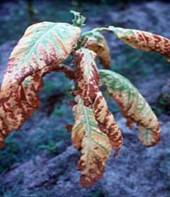
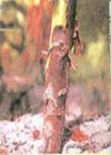
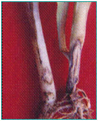
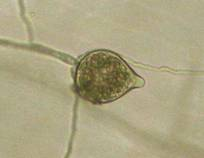

TOBACCO :: MAJOR DISEASE :: BLACK SHANK
Black shank - Phytophthora parasitica var. nicotianae
Symptoms
The pathogen may affect the crop at any stage of its growth. Even though all parts are affected, the disease infects chiefly the roots and base of the stem. Seedlings in the nursery show black discolor of the stem near the soil level and blackening of roots, leading the wet rot in humid condition and seedling blight in dry weather with withering and drying of tips. The pathogen also spreads to the leaves and causes blighting and drying of the bottom leaves. In the transplanted crop, the disease appears as minute black spot on the stem, spreads along the stem to produce irregular black patches and often girdling occurs.
|  |  |  |
Symptoms |
||
The upward movement leads to development of necrotic patches on the stems. The infected tissues shrink, leaving a depression and in advanced condition the stem shrivels and plant wilts. When the affected stem is split open, the pith region is found to be dried up in disc-like plates showing black discolouration. On the leaves large brown concentrically zonate patches appear during humid weather, leading to blackening and rotting of the leaves.
Pathogen
The fungus produces hyaline and non-septate mycelium. The sporangia, which are hyaline, thin walled, ovate or pyriform with papillae, develop on the sporangiophores in a sympodial fashion. Sporangia germinate to release zoospores which are usually kidney shaped, biciliate and measure 11-13 x 8-9µm. The fungus also produces globoose and thick walled chlamydospores, measuring 27-42µm in diameter. Oospores are thick walled, globose, smooth and light yellow coloured, measuring 15-20µm in diameter.
|  |
Sporangia |
Favourable Conditions
- Frequent rainfall and high soil moisture.
- High population of rootknot nematodes Meloidogyne incognita var. acrita.
Disease cycle
The fungus lives as a saprophyte on organic wastes and infected crop residues in soil. The fungus is also present in the soil as dormant mycelium, oospores and chlamydospores for more than 2 years. The primary infection is by means of oospores and chlamydospores in the soil. Secondary spread is by wind-borne sporangia. The pathogen in the soil spreads through irrigation water, transport of soil, farm implements and animals.
Management
- Cover the seed beds with paddy husk or groundnut shell at 15-20 cm thick layer and burn.
- Provide adequate drainage in the nursery. Drench the nursery beds with 1 per cent Bordeaux mixture or 0.2 per cent Copper oxychloride, two days before sowing.
- Spray the beds two weeks after sowing with 0.2 per cent Metalaxyl or 0.2 per cent Captafol or 0.2 per cent Copper oxychloride or 1 per cent Boreaux mixture and repeat after 10 days.
- Select healthy, disease free seedlings for transplanting.
- Remove and destroy the affected plants in the field.
- Spray Mancozeb 2 kg or Copper oxychloride 1 kg or Ziram 1 lit/ha. Spot drench with 0.4 per cent Bordeaux mixture or 0.2 per cent Copper oxychloride.